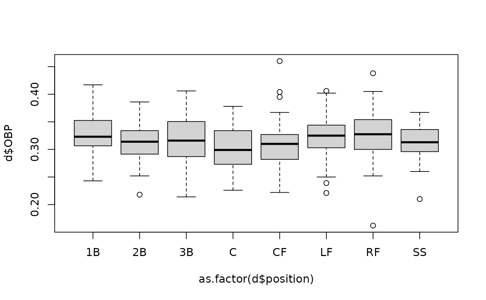
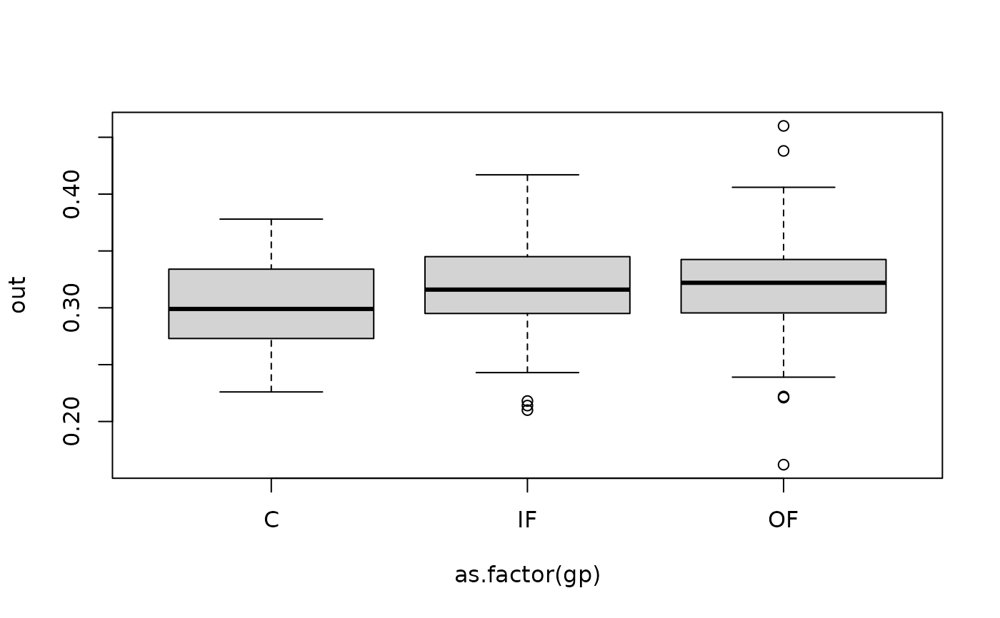

R/data-mlb_players_18.R
mlb_players_18.RdBatter statistics for 2018 Major League Baseball season.
mlb_players_18
A data frame with 1270 observations on the following 19 variables.
Player name
Team abbreviation
Position abbreviation: 1B = first base,
2B = second base, 3B = third base, C = catcher,
CF = center field (outfield), DH = designated hitter,
LF = left field (outfield), P = pitcher,
RF = right field (outfield), SS = shortstop.
Number of games played.
At bats.
Runs.
Hits.
Doubles.
Triples.
Home runs.
Runs batted in.
Walks.
Strike outs.
Stolen bases.
Number of times caught stealing a base.
Batting average.
On-base percentage.
Slugging percentage.
On-base percentage plus slugging percentage.
#> [1] 429 19#> #> Call: #> lm(formula = OBP ~ as.factor(position), data = d) #> #> Residuals: #> Min 1Q Median 3Q Max #> -0.162185 -0.024185 -0.000745 0.026062 0.149038 #> #> Coefficients: #> Estimate Std. Error t value Pr(>|t|) #> (Intercept) 0.328490 0.005544 59.252 < 2e-16 *** #> as.factor(position)2B -0.013562 0.007663 -1.770 0.077506 . #> as.factor(position)3B -0.010745 0.007696 -1.396 0.163433 #> as.factor(position)C -0.026553 0.007432 -3.573 0.000394 *** #> as.factor(position)CF -0.017528 0.007766 -2.257 0.024520 * #> as.factor(position)LF -0.004264 0.007766 -0.549 0.583277 #> as.factor(position)RF -0.004305 0.007731 -0.557 0.577911 #> as.factor(position)SS -0.016769 0.008197 -2.046 0.041397 * #> --- #> Signif. codes: 0 ‘***’ 0.001 ‘**’ 0.01 ‘*’ 0.05 ‘.’ 0.1 ‘ ’ 1 #> #> Residual standard error: 0.03959 on 421 degrees of freedom #> Multiple R-squared: 0.04361, Adjusted R-squared: 0.0277 #> F-statistic: 2.742 on 7 and 421 DF, p-value: 0.008569 #>#> Analysis of Variance Table #> #> Response: OBP #> Df Sum Sq Mean Sq F value Pr(>F) #> as.factor(position) 7 0.03009 0.0042983 2.7421 0.008569 ** #> Residuals 421 0.65992 0.0015675 #> --- #> Signif. codes: 0 ‘***’ 0.001 ‘**’ 0.01 ‘*’ 0.05 ‘.’ 0.1 ‘ ’ 1# _____ Simplified Analysis, Fewer Positions _____ # pos <- list(c("LF", "CF", "RF"), c("1B", "2B", "3B", "SS"), "C") POS <- c("OF", "IF", "C") table(d$position)#> #> 1B 2B 3B C CF LF RF SS #> 51 56 55 64 53 53 54 43# _____ On-Base Percentage Across Positions _____ # out <- c() gp <- c() for(i in 1:length(pos)){ these <- which(d$position %in% pos[[i]]) out <- c(out, d$OBP[these]) gp <- c(gp, rep(POS[i], length(these))) } plot(out ~ as.factor(gp))#> #> Call: #> lm(formula = out ~ as.factor(gp)) #> #> Residuals: #> Min 1Q Median 3Q Max #> -0.157819 -0.024819 -0.001385 0.027063 0.140181 #> #> Coefficients: #> Estimate Std. Error t value Pr(>|t|) #> (Intercept) 0.301937 0.004972 60.729 < 2e-16 *** #> as.factor(gp)IF 0.016448 0.005695 2.888 0.00408 ** #> as.factor(gp)OF 0.017881 0.005883 3.040 0.00252 ** #> --- #> Signif. codes: 0 ‘***’ 0.001 ‘**’ 0.01 ‘*’ 0.05 ‘.’ 0.1 ‘ ’ 1 #> #> Residual standard error: 0.03977 on 426 degrees of freedom #> Multiple R-squared: 0.02328, Adjusted R-squared: 0.01869 #> F-statistic: 5.077 on 2 and 426 DF, p-value: 0.006624 #>#> Analysis of Variance Table #> #> Response: out #> Df Sum Sq Mean Sq F value Pr(>F) #> as.factor(gp) 2 0.01606 0.0080314 5.0766 0.006624 ** #> Residuals 426 0.67395 0.0015820 #> --- #> Signif. codes: 0 ‘***’ 0.001 ‘**’ 0.01 ‘*’ 0.05 ‘.’ 0.1 ‘ ’ 1